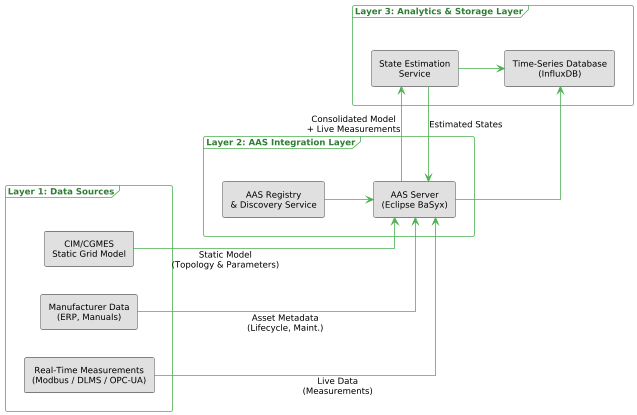
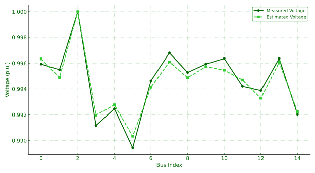

M.Sc. in Electrical Engineering | Digital Twin & Smart Grid Specialist
TU Dortmund University | Grade: [Insert Grade]
My research addresses the critical interoperability gap in Low-Voltage grids by proposing a Digital Twin framework based on the Asset Administration Shell (AAS).

System Architecture: CIM to AAS Pipeline

Validation: Estimated vs. Measured Voltages
Applied Random Forest and Neural Networks to predict voltage violations in decentralized grids.
A Python tool to parse CIM/XML files and generate AAS submodels automatically for DSOs.